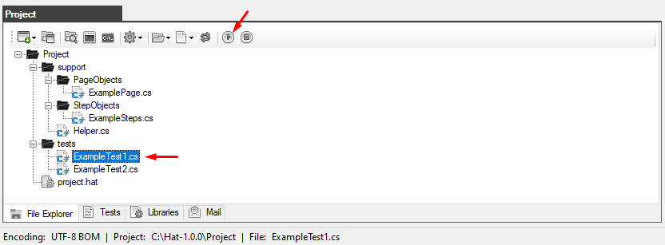
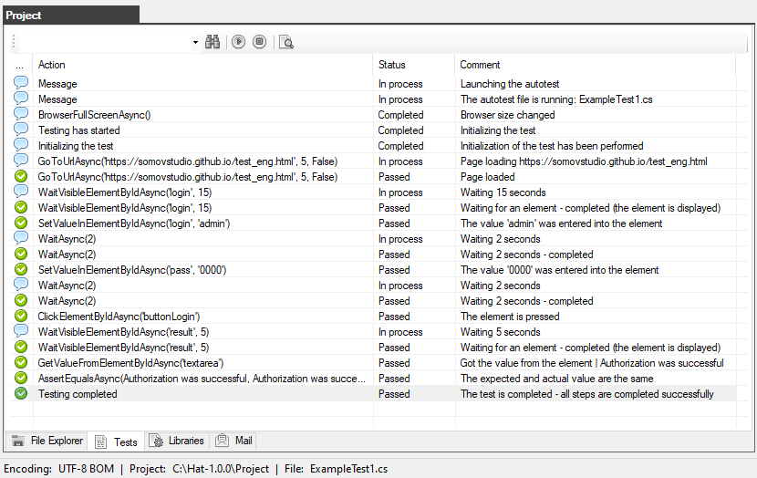
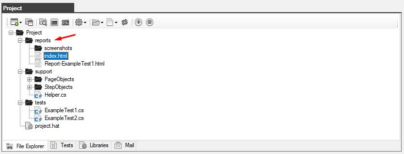
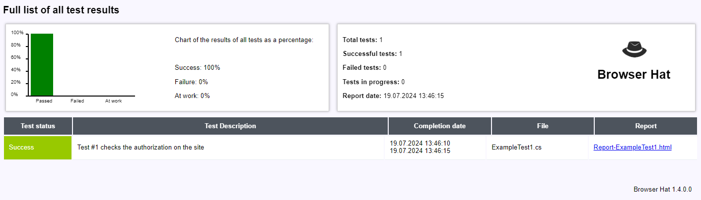
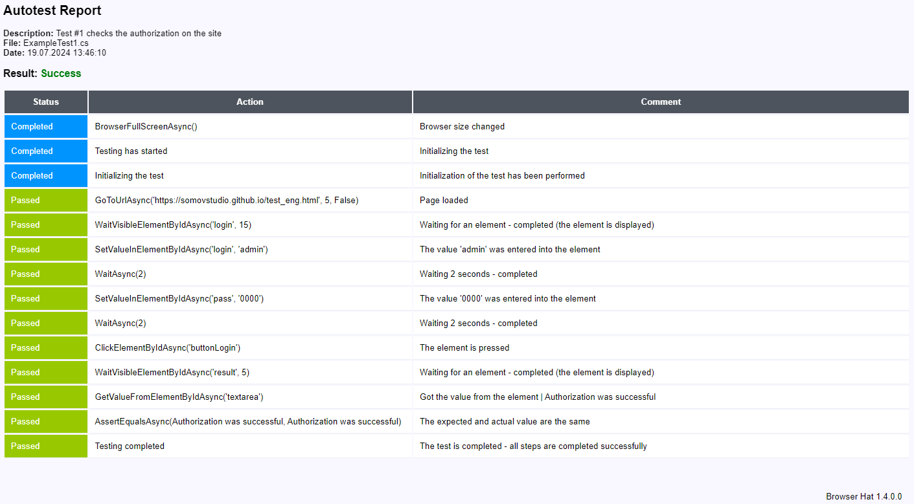

Launching the autotest
To run the autotest, select it in the tests folder and click on the "Run test" button
In our case, the ExampleTest1.cs file is launched

The verification process is displayed on the "Test" tab

Upon completion of the autotest, a folder "report" will be created in the root of the project, which contains all reports and screenshots with the results of the performed check.

Double-clicking on the report file (for example: index.html or Report-ExampleTest1.html) you will receive a report with a full description of the progress of the autotest.
For more information about reports and sending reports by mail, see the relevant sections.


As a result, the project was created, the autotest was launched and a report was received.
Created with the Personal Edition of HelpNDoc: Easy EPub and documentation editor